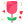
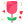

Te tengo en mi corazon y en cada sticker de monito que vea
Me arrepiento de cada palabra que no dije, de cada abrazo que no di, de cada error que me alejó de ti.
Siempre quise hacerte algo asi
pero fui cobarde no me quise que me veas debil
pero me derretia ver tus ojitos chiquitos
desde que te conoci eres la mejor en todo y estoy orgulloso de ti
Siempre me vi junto a ti
Gracias por tanto y perdon por tan poco
por no demostrarte mi amor como queria hacerlo
hay cosas que intente para hacerte sentir amada
mas no lo hice
como esto por ejemplo

siempre quise presumirte pero pudo mas el miedo a que le gustaras a alguien mas, que no me dejo
siempre te quise dar los tulipanes y los girasoles
se que te lo merecias y yo fui un imbecil
y no sabes cuanto daria por hacer las cosas bien
presumirte mimarte darte un amor bonito y poder curarte de lo que yo mismo hice
acepto mi error y nunca me lo perdonare
sinceramente eres una mujer fantastica o como dice mi mama "eres una chica excelente A1"
te quiero demasiado
Gracias por tu apoyo y amor incondicional espero darte lo mismo

Ojalá la vida me dé la oportunidad de demostrarte que aprendí, que cambié, que te merezco

 
